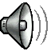

NOSTALGIC SOUNDS

These are sounds that were made around from late 90's to
early 2000's.
You may recognize some of these sounds somewhere, that's because they were used in
games from those times, for example, you can hear the sound bass.wav on ROBLOX.
The reason why I have these sounds saved is because what
the title says, nostalgia, some people associate nostalgia with 8-bit sounds/graphics,
I don't, I associate nostalgia with 90's graphics (with 90's graphics I mean those
graphics that you see when you make your first OpenGL program), 90's sounds, those
low-quality sounds, even those 90's websites (that's why my website looks like it was
made back in the 90's haha). And also because some of the sounds have the risk of being lost,
there's some sounds lost already, so I don't want more of those sounds get lost.
Each sound will be categorized by origin, not by name nor type
or sound (Maybe I will eventually for the sake of getting things organized).
A1 Free Sounds
There's even more to come, but that would be it for now.
If you have a sound
that provokes this nostalgic 90's feeling saved somewhere on your computer, or know where to get more
sounds like the ones listed, send me an email: lebert130@gmail.com or send me a DM on Discord: Lebert130#5127.
The sounds that I consider the most to save are the ones that are pretty obscure and/or
at risk of getting lost. Sounds from DOOM for example I wouldn't consider that much because everybody knows what
DOOM is, and because you can just download the game to get those sounds, but it doesn't hurt trying contacting me.
© 2021 Bernard (AKA Lebert130)